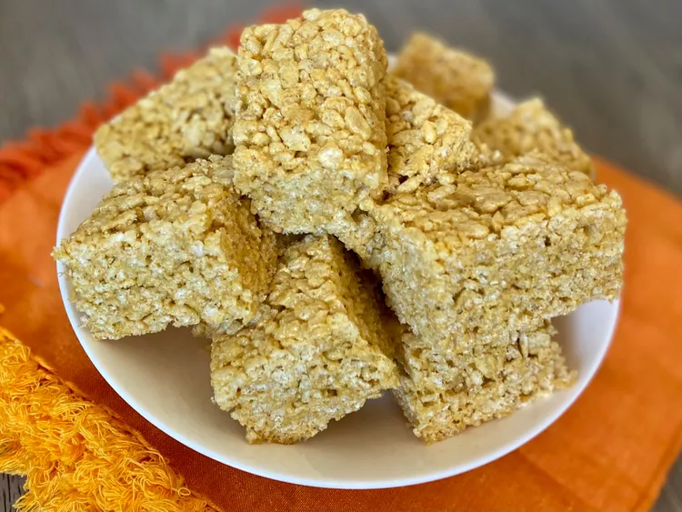

Pampkin Spice Rice Krispie Treats

Description:
I made these pumpkin spice Rice Krispie treats for a fall bake sale and they were a total hit with kids and adults alike. If you're someone who can't get enough pumpkin each fall, be sure to try these!
Ingredients:
- 6 tablespoons butter, softened
- 1/2 cup pumpkin puree
- 2 (10 ounce) bags mini marshmallows
- 1 teaspoon vanilla extract
- 1 teaspoon ground cinnamon
- 1 teaspoon ground ginger
- 1/4 teaspoon ground cloves
- 1/4 teaspoon salt
- 12 cups crispy rice cereal, such as Rice Krispies®
Steps:
- Grease a 9x13-inch baking pan or casserole dish with butter or cooking spray.
- Add butter and pumpkin puree to a large pot set over medium heat. Stir well and add vanilla, cinnamon, ginger, cloves, and salt. Once the mixture is heated through and homogenous, add marshmallows. Stir constantly, still over medium heat, until marshmallows have melted, about 5 minutes. Remove from heat; cool for 15 to 20 minutes.
- Pour in cereal and mix well. This will require some elbow grease to get all of the cereal evenly coated in the pumpkin-marshmallow mixture!
- Pour mixture into the prepared pan and use a spatula to flatten and spread out evenly. Place in the freezer until cool to the touch, 15 to 30 minutes.
- To slice and serve, run a knife along the sides of the pan and invert onto a cutting board. Using a large chef's knife, cut treats into bars.